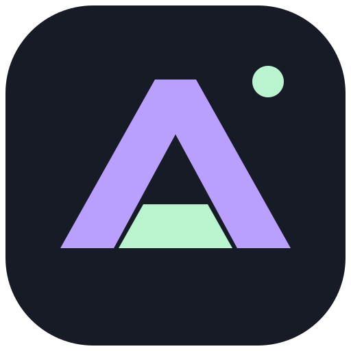

همان تجربهٔ آنلاین؛ با فضایی مستقل برای گفتوگو و مقایسه.
ارتباط امن با سایت در حال برقراری است.
اتصال اینترنت را بررسی کنید و دوباره تلاش کنید.
اگر ورود یا بررسی امنیتی سایت در برنامه انجام نشد، از مرورگر استفاده کنید.